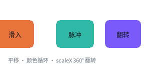

动画

完整程序：example/05_animation.c
三类动效，全部只写 CSS：
| 写法 | 触发 | 例子 |
|---|---|---|
transition |
状态变化（:hover 之类） |
按钮变色、卡片抬起 |
@keyframes |
自己一直播 / 播 N 次 | 滑入、脉冲、翻转 |
手动 ql_ui_anim_tick |
你的代码决定 | 进度条、滚动 |
@keyframes 长什么样
.slide { animation: slide-in 1400ms ease-out infinite; }
.pulse { animation: pulse 1400ms ease-in-out infinite; }
.flip { animation: flip-x 1400ms ease-in-out infinite; }
@keyframes slide-in {
from { transform: translate(-24px, 0px); }
to { transform: translate(0px, 0px); }
}
@keyframes pulse {
0% { background-color: #2FB8A6; }
50% { background-color: #E6C34A; }
100% { background-color: #2FB8A6; }
}
@keyframes flip-x {
0% { transform: scaleX(1); }
50% { transform: scaleX(0); }
100% { transform: scaleX(1); }
}
animation 的完整写法：
animation: <name> <duration> [ease] [delay] [iteration] [direction] [fill-mode]
关键帧在编译期就摊平了
@keyframes 不在运行期解析。编译器把它变成两张静态表：
QLUIKeyframe[] 每一帧：时间点(千分比) + 缓动 + 通道位 + 各通道的值
QLUIAnimation[] 每一段：帧区间 + 时长 + 迭代次数 + 方向 + fill + 延迟
运行期求值就是一个纯函数：
u = f(now - start_ms) /* 0..1，不累加 dt */
不累加 dt 这点很重要：掉帧、窗口最小化、补帧都不会造成漂移，
uint32 回绕天然安全。
主循环只要一行
while (running) {
ql_input_dispatch();
ql_ui_anim_tick(ui, ql_anim_now_ms()); /* ← 就这一行 */
QLRect areas[16];
int n = ql_ui_consume_dirty(ui, areas, 16);
if (n > 0) {
ql_gfx_gl_begin_rects(gfx, bg, areas, n);
for (int i = 0; i < n; i++)
ql_ui_render_rect(ui, d2d, areas[i]);
ql_gfx_gl_end(gfx);
}
}
ql_ui_anim_tick 的返回值是这一帧还在动的动画数（不是"还剩几帧"）：
- 返回 0 → 界面完全静止，可以整帧跳过（省电，也是 MCU 上能跑的前提）；
- 返回非 0 → 至少有一个节点被标脏。
不要用"返回值变成 0"来判断某个动画播完了 —— infinite 的动画永远非 0。
要那类事件用回调：
ql_ui_set_anim_end_cb(ui, on_anim_end, NULL);
/* kind 是 QL_UI_ANIM_END_KEYFRAMES 或 QL_UI_ANIM_END_TRANSITION */
脏区：动画只在需要的地方重绘
这个例程里 3 个元素在动，运行起来打印：
t= 0ms 在动 3 个 脏区 3 块
t=100ms 在动 3 个 脏区 3 块
...
3 块脏区而不是整屏。ql_ui_consume_dirty 会把重叠的脏区合并
（上限 QL_CFG_DIRTY_RECT_MAX，默认 16，满了就合并成一块）。
想验证"局部重绘 == 整幅重画"，看 test/web/test_render.c 与 test_scale.c
里的逐像素对照。
能动画的属性
只有绘制期属性能进关键帧，因为它们不需要重排：
| 属性 | 备注 |
|---|---|
background-color / background（渐变） |
渐变的首末色一起插值 |
opacity |
实际语义是背景 alpha，见下面的说明 |
color / border-color |
|
border-radius |
半径撑到短边一半就是正圆 → 圆角揭示动画 |
clip-path: circle(<pct>%) |
圆形遮罩，裁整棵子树 |
transform: translate() / scale() / scaleX() / scaleY() |
平移与轴对齐缩放 |
写别的（width、box-shadow、font-size）会在编译期报错 —— 因为那需要逐帧重排，
和"动画零重排"这条设计前提冲突。
opacity的诚实说明：本实现没有 CSS 的"组不透明度"（那需要离屏合成）， 它插值的是背景 alpha。所以opacity: 0等于"背景变全透明"，子元素不受影响。 做淡入淡出请用background-color: rgba(...)表达。
三个现成的动效套路
滑入
@keyframes slide-in {
from { transform: translate(-24px, 0px); opacity: 0; }
to { transform: translate(0px, 0px); opacity: 1; }
}
圆角揭示（展开成圆形）
@keyframes reveal {
0% { border-radius: 8px; clip-path: circle(20%); }
70% { border-radius: 55px; clip-path: circle(100%); }
100% { border-radius: 8px; clip-path: circle(20%); }
}
假 3D 翻转
@keyframes flip-x {
0% { transform: scaleX(1); }
50% { transform: scaleX(0); } /* 压到零宽 = 看不见 */
100% { transform: scaleX(1); }
}
这是真的"翻面"观感，但完全没有 3D 变换。想做"正面翻到背面"（换一张脸），
用两个元素错开 animation-delay：
.front { animation: flip-x 900ms ease-in-out infinite; }
.back { animation: flip-x 900ms ease-in-out infinite; animation-delay: 450ms; }
性能基线
本机（AMD Renoir / Mesa / x86-64，Release）：
| 场景 | 耗时 |
|---|---|
| 5 段动画同时跑（tick + 4 块脏区重绘） | 0.0052 ms/帧 |
| 10 元素同时动画（tick + 全部重绘） | 0.0259 ms/帧 |
| 60fps 的预算 | 16.7 ms |
也就是说动画本身的开销在噪声里。真正的成本是面积（重绘多少像素）， 所以"只重绘脏区"这条比"动画算得快"更重要。